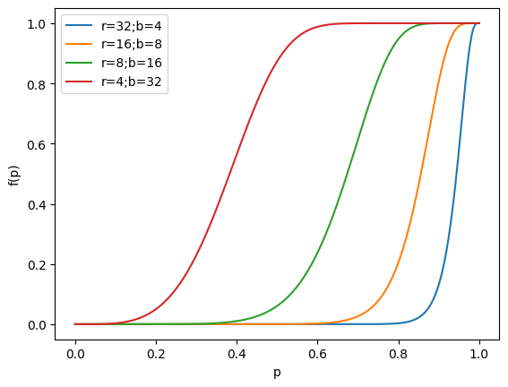

最近在工作中用到了MinHash[1]，使用它做了一些文档去重和查找相似数据的任务。工欲善其事，必先利其器。要想用好一个算法/工具，就需要深入了解它的底层细节。本文简单记录了我对MinHash方法的理解，并展示了一些简单的实验。
本文先介绍了将文档视为数字的集合这一思想，并演示了几种不同的实现方案；既然文章可以视为数的集合，那么自然可以用集合的交并比这一度量来衡量文章之间的相似度；接著，文章介绍了MinHash的核心：对集合的最小值进行采样，借此估测集合间的交并比；最后，文章介绍了MinHash作为一种局部敏感哈希（Locality Sensitive Hashing，LSH）具有怎样的特点，可以如何利用LSH的特点来加速文档去重过程。
在文章的开头，我们先罗列和导入后续会需要用到的包：
import numpy as np
import pandas as pd
from typing import Tuple, List, Set, Dict
from collections import defaultdict
import random
import time
import matplotlib.pyplot as plt
random.seed(0)1 将文档看作集合
文档可以看作是字符组成的序列。尽管现在使用RNN、Transformer等深度神经网络来处理文本的方法已经十分普遍，但当要处理文本规模达到上百万的量级时，忽略词语的语义、语序，仅考虑其词语构成，进行“机械的”相似度比较仍是一种有效的方法。
以文档A"a rose is a rose is a rose"和文档B"a rose is a flower which is a rose"为例，两个文档可以分别被拆解为如下的单词：
A = ("a", "rose", "is", "a", "rose", "is", "a", "rose")
B = ("a", "rose", "is", "a", "flower", "which", "is", "a", "rose")将A和B分别表示为其使用到的单词的集合是一种简单的方法。除此之外，还可以考虑将相邻的若干单词组成“Shingle”（又被称为n-gram），将文档考虑为Shingle的集合。
显然，Shingle可以被定义为字符串组成的n元组。
Shingle = Tuple[str]忽略Shingle的出现顺序，我们可以将文章看作是Shingle的集合。我们分普通集合和多重集两种情况分别讨论。
下面的代码展示了如何将一个文档转化为由Shingle构成的多重集。与普通的集合不同，多重集允许元素多次重复出现，这使得我们可以统计每种Shingle的出现次数。
代码使用Dict来模拟多重集。函数返回的Dict统计了文档中出现的每种Shingle的数量。
def doc_to_shingle_bag(doc: List[str], w:int) -> Dict[Shingle, int]:
assert w > 0, w
ret = defaultdict(int)
for i in range(len(doc) - w + 1):
ret[tuple(doc[i:i+w])] += 1
return ret
下面的代码展示了将文档A转化为Shingle的多重集的结果。Shingle的大小分别被设置为1、2、4.
print(doc_to_shingle_bag(A, 1))
print(doc_to_shingle_bag(A, 2))
print(doc_to_shingle_bag(A, 4))defaultdict(<class 'int'>, {('a',): 3, ('rose',): 3, ('is',): 2})
defaultdict(<class 'int'>, {('a', 'rose'): 3, ('rose', 'is'): 2, ('is', 'a'): 2})
defaultdict(<class 'int'>, {('a', 'rose', 'is', 'a'): 2, ('rose', 'is', 'a', 'rose'): 2, ('is', 'a', 'rose', 'is'): 1})其实不考虑Shingle的出现次数，将文档视为Shingle的普通集合也是可行的。这样的做法稍微粗糙一些，但效率更高。
doc_to_shingles函数提供了将文档转化为Shingle的集合的方法：
def doc_to_shingles(doc: List[str], w: int) -> Set[Shingle]:
assert w > 0, w
ret = set()
for i in range(len(doc) - w + 1):
ret.add(tuple(doc[i:i+w]))
return ret print(doc_to_shingles(A, 1))
print(doc_to_shingles(A, 2))
print(doc_to_shingles(A, 4)){('a',), ('rose',), ('is',)}
{('rose', 'is'), ('is', 'a'), ('a', 'rose')}
{('is', 'a', 'rose', 'is'), ('a', 'rose', 'is', 'a'), ('rose', 'is', 'a', 'rose')}MinHash方法[1]提出使用交并比（又被称为Jaccard相似度）来衡量文档间的相似度（resemblance）。交并比（即交集大小与并集大小之比）的计算公式如下：
\[ J(A, B) = \frac{|A\cap B|} {|A\cup B|} \]
如果文档被表示为多重集的话，我们可以使用下面的函数来计算其相似度：
def naive_resemblance_a(
shingles_a: defaultdict[Shingle, int],
shingles_b: defaultdict[Shingle, int]
) -> float:
i = 0
u = 0
for k in set(shingles_a.keys()) | set(shingles_b.keys()):
i += min(shingles_a[k], shingles_b[k])
u += max(shingles_a[k], shingles_b[k])
return i / max(u, 1e-6)下面的代码对相似度计算结果进行检查，可以看到计算结果与论文[1]提供的数据保持一致。
eps = 1e-6
ret = naive_resemblance_a(doc_to_shingle_bag(A, 1), doc_to_shingle_bag(B, 1))
assert abs(ret - 0.7) < eps, ret
ret = naive_resemblance_a(doc_to_shingle_bag(A, 2), doc_to_shingle_bag(B, 2))
assert abs(ret - 0.5) < eps, ret
ret = naive_resemblance_a(doc_to_shingle_bag(A, 3), doc_to_shingle_bag(B, 3))
assert abs(ret - 0.3) < eps, ret
print('All test cases passed.')All test cases passed.类似的，如下代码提供了将文档表示为Shingle的普通集合时，resemblance的计算方法，并作了检查：
def naive_resemblance_b(
shingles_a: Set[Shingle],
shingles_b: Set[Shingle]
) -> float:
intersection = shingles_a & shingles_b
union = shingles_a | shingles_b
return len(intersection) / max(len(union), 1e-6)eps = 1e-6
ret = naive_resemblance_b(doc_to_shingles(A, 1), doc_to_shingles(B, 1))
assert abs(ret - 0.6) < eps, ret
ret = naive_resemblance_b(doc_to_shingles(A, 2), doc_to_shingles(B, 2))
assert abs(ret - 0.5) < eps, ret
ret = naive_resemblance_b(doc_to_shingles(A, 3), doc_to_shingles(B, 3))
assert abs(ret - 0.42857142) < eps, ret
print('All test cases passed')All test cases passed将Shingle的大小记为\(w\)，从以上的计算中我们可以看到\(w\)越大，resemblance就对差异越敏感。
至此，文章展示了如何将文档转化为Shingle的集合，并用交并比衡量文档相似性。在实际程序中，我们可以为每一种可能的Shingle分配一个id。至此，我们介绍了如何将文档表示为数字的集合。
上文介绍的方法与MinHash论文[1]保持一致。但这种方法仍是粗浅的。在实际的应用中，我们可以考虑是否去除stop words（即“a”, “the”，“of”等对文章语义贡献较小的词汇）。我们还可以考虑合并单词的不同形态，例如为“learn”、“learning”、“learned”赋予相同的id……除此之外，如何实现中文的分词也是一个值得深入的问题。本文就不再就此作更多探讨了。接下来，让我们假设文档已经被转化为数字的集合。
2 用最小值估计文档相似度
前文我们介绍了如何将文档表示为数字的集合，我们将这种操作记为\(S(A, w)\)，其中\(A\)为输入的文档，\(w\)为shingle的尺寸。
在后面的文章中，我们可以生成一些随机集合用于实验（跳过shingle操作）。假设变量vocab_size规定了集合的最大尺寸，下面的代码能随机为我们生成一些“文章”：
vocab_size = 60000
def random_doc(k):
return set(random.sample(range(vocab_size), k))random_doc(4){25247, 49673, 55340, 58343}如前所述，文章的相似度可以用交并比（又名Jaccard similarity）衡量。既然文章被表示为集合，那么相似度的计算可以被实现为：
def Jaccard_similarity(doc_a, doc_b):
doc_a = set(doc_a)
doc_b = set(doc_b)
return len(doc_a & doc_b) / len(doc_a | doc_b)假设\(\Omega\)是所有可能的Shingle组成的集合。设\(\Omega\)是一个有序集，因此我们可以比较\(\Omega\)中所有元素的大小。对于\(\Omega\)的子集\(W\)，定义 \[ \text{MIN}_s(W) = \left\{ \begin{aligned} &\text{W中最小的s个元素}, &\text{if} |W|\geq s \\ &W, &\text{otherwise} \end{aligned} \right., \] 定义 \[ M(A) = \text{MIN}_s(\pi(S(A, w))), \] 其中\(\pi:\Omega\rightarrow\Omega\)是定义在集合\(\Omega\)上的一个“置换”（即将\(\Omega\)集合作了一次“洗牌”，一一对应地将\(\Omega\)中的一个元素映射到另一个元素）。
那么：
定理 1 \[ \frac{|\text{MIN}_s(M(A)\cup M(B))\cap M(A) \cap M(B)|}{|\text{MIN}_s(M(A)\cup M(B)|} \tag{1}\] 是文档A和文档B的resemblance的无偏估计（以置换操作\(\pi\)是随机挑选的为前提）。
证明： 显然 \[ \begin{aligned} \text{MIN}_s(M(A)\cup M(B)) &= \text{MIN}_s(\pi(S(A, w))\cup \pi(S(B, w))) \\ &= \text{MIN}_s (\pi(S(A, w)\cup S(B, w))) \end{aligned} \] 设\(\alpha\)是\(\pi(S(A, w)\cup S(B, w))\)中最小的元素，那么 \[ \begin{aligned} P(\alpha \in M(A) \cap M(B)) &= P(\pi^{-1}(\alpha)\in S(A, w)\cap S(B, w)) \\ &= \frac{|S(A, w)\cap S(B, w)|}{|S(A, w)\cup S(B, w)|} \end{aligned} \] 假设\(\alpha\)是\(\pi(S(A, w)\cup S(B, w))\)中第二小、第三小……的元素，上式同样成立。因此命题成立。
这实际上是一个关于“超几何分布”的期望的问题，你可以在网络上查找相关讨论。
以上介绍的命题就是MinHash工作的核心原理。接下来，文章使用代码验证这个命题，并演示相关函数是如何工作的。
首先，我们先实现\(\text{MIN}_s\)函数：
def min_s(doc, s):
doc = np.asarray(list(doc))
return -find_top_k(-doc, s) \
if len(doc) > s \
else docmin_s的实现使用到了find_top_k函数。我隐藏了它的实现，实际上find_top_k是一个返回数组中最大的\(k\)个数的函数，可以用排序法或者quick select算法实现。
假设我们有一个大小为\(4\)的集合作为输入，那么min_s取\(s=2\)时的输出为：
d = random_doc(4)
print('document:', d)
print('min_s(document):', min_s(d, 2))document: {37120, 22297, 40130, 50311}
min_s(document): [37120 22297]MinHash中，随机性的来源是对置换操作\(\pi\)的采样。下面的代码随机初始化了一些候选的置换操作，可以作为\(\pi\)的候选。
random_permutations = []
for i in range(1000):
indices = list(range(vocab_size))
random.shuffle(indices)
random_permutations.append(indices)
random_permutation_index = 0def get_random_permutation():
global random_permutation_index
indices = random_permutations[random_permutation_index]
random_permutation_index += 1
random_permutation_index %= len(random_permutations)
pi = lambda x: [indices[i] for i in x]
return pi 接著实现\(M(A)\)函数。\(M(A) = \text{MIN}_s(\pi(S(A, w)))\)，其代码实现为：
def m(pi, doc, s):
return min_s(pi(doc), s)利用min_s和m函数，resemblance计算的实现就直观明了了。根据公式 1，resemblance可以用如下代码估计：
def estimate_resemblance(pi, doc_a, doc_b, s):
ma = set(m(pi, doc_a, s))
mb = set(m(pi, doc_b, s))
tmp = set(min_s(ma | mb, s))
return len(tmp & ma & mb) / len(tmp) 下面的程序检验了estimate_resemblance函数对resemblance的估计结果与真值（Jaccard similarity）的一致性。实验表明MinHash所提出的方法确实能比较好地对Jaccard similarity进行估计。
errors = []
for i in range(8):
length_a = random.randint(10000, 30000)
length_b = random.randint(10000, 30000)
doc_a = random_doc(length_a)
doc_b = random_doc(length_b)
sim_j = Jaccard_similarity(doc_a, doc_b)
num_samples = 256
samples = []
for j in range(num_samples):
pi = get_random_permutation()
s = estimate_resemblance(pi, doc_a, doc_b, s=10)
samples.append(s)
resemblance_est = np.mean(samples)
# assert abs(sim_j - resemblance_est) < 1e-2
errors.append((sim_j - resemblance_est))
print('{}：{:.4f} ≈ {:.4f}'.format(i + 1, sim_j, resemblance_est))
print('Average error:', np.mean(np.abs(errors))) 1：0.2656 ≈ 0.2516
2：0.2224 ≈ 0.2391
3：0.1757 ≈ 0.1734
4：0.2111 ≈ 0.2066
5：0.2557 ≈ 0.2387
6：0.2848 ≈ 0.2785
7：0.1928 ≈ 0.1980
8：0.1944 ≈ 0.1961
Average error: 0.008473042802044726后续的方法[2]往往采用\(s=1\)的MinHash的特例。在\(s=1\)时，公式 1的含义就变为：
设\(A\)和\(B\)为待比较的输入文档，\(\pi\)为随机采样的置换。\(a=\min(\pi(A))\)，\(b=\min(\pi(B))\)，\(J(A, B) = P(a=b)\).
读者可以自行通过实验验证：当\(s=1\)时，MinHash也能很好地估计文档的相似度。
3 哈希函数
前文已经介绍了MinHash的核心思想，即基于随机采样的置换操作\(\pi\)选取最小的\(s\)个元素，根据这些元素是否相同，可以估计输入文档的相似度。但是随机置换\(\pi\)的生成比较耗时。考虑到shingle集合一般可以通过哈希函数\(h(\cdot)\)转化为范围有限的数字，然后这些数字经过置换操作\(\pi:\Omega\rightarrow\Omega\)在变换为\(\Omega\)内的其它数字，我们可以假设哈希函数\(h\)内部已经实现了置换操作，从而将\(\pi\)省略掉。这种假设的前提是\(h\)的哈希碰撞很少。
以下代码实现了一种哈希函数： \[ h_i(x) = (a_i x + b_i) \mod P \] ，其实现参考了chrisjmccormick的开源代码。
该哈希函数中，\(a_i\)和\(b_i\)分别是随机采样的系数，这使得哈希函数\(h_i\)具有随机性，对应于原\(\pi\)的随机性。
首先，我们需要随机选取\(a_i\)和\(b_i\)，在代码中对应于coeff_a和coeff_b. 待要生成的哈希函数的数量记为num_hashes.
max_shingle_ID = 2**32-1
next_prime = 4294967311
num_hashes = 128
def pick_random_coeffs(k):
rand_list = []
for _ in range(k):
rand_index = random.randint(0, max_shingle_ID)
while rand_index in rand_list:
rand_index = random.randint(0, max_shingle_ID)
rand_list.append(rand_index)
return rand_list
coeff_a = pick_random_coeffs(num_hashes)
coeff_b = pick_random_coeffs(num_hashes)
print(coeff_a[:8], coeff_b[:8])[1725382162, 4099968420, 181011877, 2646584740, 2425745411, 1382556146, 2811366918, 584506969] [4024735497, 432468821, 4092063574, 1311785557, 3815225036, 3844735591, 2426666110, 66760331]那么，记录了num_hashes条随机哈希函数的列表可以实现为：
from functools import partial
hash_functions = [
partial(
lambda x, i: (coeff_a[i] * x + coeff_b[i]) % next_prime,
i=i
)
for i in range(num_hashes)
]以下是一些例子，说明不同的哈希函数对于同样的输入，输出是不同的：
hash_functions[0](0), hash_functions[1](0), hash_functions[0](0)(4024735497, 432468821, 4024735497)于是，对于输入文档doc，我们可以对应应用num_hashes条哈希函数，得到对应的哈希值作为它的“signature”。
def get_min_hash(doc):
hash_codes = [
min((hash_function(x) for x in doc))
for hash_function in hash_functions
]
return hash_codes 根据公式 1，signature的汉明距离（即数一数不同的哈希值的数量）就衡量了两篇文档的距离。让我们用实验来验证这一点：
random_docs = [random_doc(random.randint(10000, 30000)) for _ in range(8)]
hash_codes = [get_min_hash(doc) for doc in random_docs]
errors = []
total_time_j = 0
total_time_min_hash = 0
for i in range(len(random_docs)):
doc_a = random_docs[i]
min_hash_a = hash_codes[i]
for j in range(i + 1, len(random_docs)):
doc_b = random_docs[j]
min_hash_b = hash_codes[j]
t = time.time()
sim_j = Jaccard_similarity(doc_a, doc_b)
total_time_j += time.time() - t
t = time.time()
resemblance_est = np.mean([a == b for a, b in zip(min_hash_a, min_hash_b)])
total_time_min_hash += time.time() - t
errors.append((sim_j - resemblance_est))
print('{}-{}：{:.4f} ≈ {:.4f}'.format(i, j, sim_j, resemblance_est))
print('Average error:', np.mean(np.abs(errors)))
print('Time Difference: {:.4}s:{:.4}s'.format(total_time_j, total_time_min_hash))0-1：0.1899 ≈ 0.2031
0-2：0.1655 ≈ 0.1406
0-3：0.2121 ≈ 0.2812
0-4：0.1410 ≈ 0.1562
0-5：0.1861 ≈ 0.1094
0-6：0.1992 ≈ 0.1562
0-7：0.1130 ≈ 0.1250
1-2：0.1965 ≈ 0.1719
1-3：0.2701 ≈ 0.2812
1-4：0.1685 ≈ 0.1250
1-5：0.2263 ≈ 0.2188
1-6：0.2462 ≈ 0.2109
1-7：0.1313 ≈ 0.1406
2-3：0.2153 ≈ 0.2422
2-4：0.1431 ≈ 0.1328
2-5：0.1900 ≈ 0.1719
2-6：0.2063 ≈ 0.2109
2-7：0.1174 ≈ 0.1484
3-4：0.1840 ≈ 0.1328
3-5：0.2553 ≈ 0.2031
3-6：0.2885 ≈ 0.2188
3-7：0.1425 ≈ 0.1484
4-5：0.1633 ≈ 0.1406
4-6：0.1732 ≈ 0.1484
4-7：0.1084 ≈ 0.1250
5-6：0.2399 ≈ 0.1875
5-7：0.1304 ≈ 0.1953
6-7：0.1370 ≈ 0.1484
Average error: 0.03030614381569787
Time Difference: 0.1847s:0.09761s我们注意到该方法确实能大体反应文档间的Jaccard similarity。如果增大num_hashes，计算的结果可以变得更加准确。
此外，还可以看到比较signature的方法比直接计算Jaccard similarity要快上不少，这是因为signature的计算可以提前准备，而比较signature的汉明距离是很快的。
尽管将文档转化为Signature的方式加速了文档的两两比较，但这种方法的时间复杂度还是\(O(n^2)\). 面对海量的大规模数据，有没有能够避免两两比对的，快速找出相似数据的方法呢？
4 局部敏感哈希
如前所述，我们希望避免大量数据将两两比对的情况。已知每个文档都可以表示为一个由哈希值构成的列表，我们可以考虑两种简单的做法：
- 将所有哈希值完全一致的文档挑出来；
- 只要有一个任意位置，在列表的这个位置上哈希值重复，就将这些文档视为重复；
首先注意到这两种方法的时间复杂度都小于\(O(n^2)\)，因为挑出哈希值重复的数据可以通过dict等数据结构实现；其次，这两种做法都是极端的。随着哈希函数数量的增加，1将挑不出任何数据，而2将返回所有数据——尽管如此，结合1和2，我们能得到一种折衷的，能实际应用的方案。
局部敏感哈希（Locality-Sensitive Hashing，LSH）就是这样一种，实现1和2的折中的技术。LSH方法首先要求相似的文档的哈希值有更大的概率相同，反之则希望它们大概率不同；其次，LSH方法将哈希函数分组，并鼓励相似的文档落入相同的bucket内。
接下来我们讨论哈希函数的分组。一组哈希函数被称为一个band。 设\(b\)为一个band内hash函数的数量，\(r\)为band的数量，于是使用到的哈希函数的总数为\(t=rb\). 那么对于随机选取的两个文档，它们的相似度为\(p\)；那么在使用MinHash的前提下，其哈希值相同的概率也为\(p\)。有如下等式成立： \[ \begin{aligned} \text{一个band内所有哈希值都相同的概率} &= p^r \\ \text{一个band内存在不同哈希值的概率} &= 1 - p^r\\ \text{所有band都不相同的概率为} &= (1 - p^r)^b \\ \text{至少存在一个完全相同的band的概率为} &= f(p) = 1 - (1 - p^r)^b \\ \end{aligned} \] 将这个函数绘制出来，我们可以看到这样的图像：
t = 128
rb_list = [
[32, 4],
[16, 8],
[8, 16],
[4, 32],
]
plt.figure()
for r, b in rb_list:
assert r * b == t
p = np.linspace(0, 1, 1000)
fp = 1 - (1 - p**r)**b
plt.plot(p, fp)
plt.legend(['r={};b={}'.format(r, b) for r, b in rb_list])
plt.xlabel('p')
plt.ylabel('f(p)')
plt.show()
plt.close()
该函数的图像是一个递增的S形曲线。在\(p\)的值不超过某个阈值的时候，概率\(f(p)\)很小；反之一旦超过这个值，\(f(p)\)就骤然增大。
用通俗的话来说，MinHash方法具有一个很好的性质：相似的两个文档（\(p\)的值比较大）有很大的概率（\(f(p)\)）使得至少存在一个band，这个band内的两文档的哈希值全部相同——这会使得它们落在同一个bucket内；函数图像中中部的跳变意味著存在一个可以调控的界限，在这个界限两端，文档落在同一bucket内的概率有鲜明的差别。
对于实际应用，该函数图像的“跳变点”是需要调控的一个重要参数。设我们希望提取相似度在阈值\(\tau\)以上的数据，那么上图的斜率最大点可以近似为\(\tau \approx (1/b)^{1/r}\)，据此可以解出\(r,b\)的值。
5 总结
回想去年参与了一个大模型项目的数据管理，负责处理源数据，然后转给资源部标注。在这个项目里我没有料到供应商给的源数据居然有大量的重复，就这样把重复的数据发给资源部了……等到反应过来，已经不知道损失了多少钱。
_(¦3」∠)_
一开始用的是暴力的编辑距离或者TFIDF特征比较的方法去重，但随著数据的增多，两两比较的暴力去重开始变得有点应付不过来。后来才学习了基于哈希的去重方法。基于哈希的方法能有更高的效率，精准度高，召回率不如暴力方法。但是深入了解了算法细节，结合项目数据的特征，还是能够设计出好用的去重策略的。
6 一些参考资料
- MinHash Example
- MMDS text book
- http://www.mmds.org/